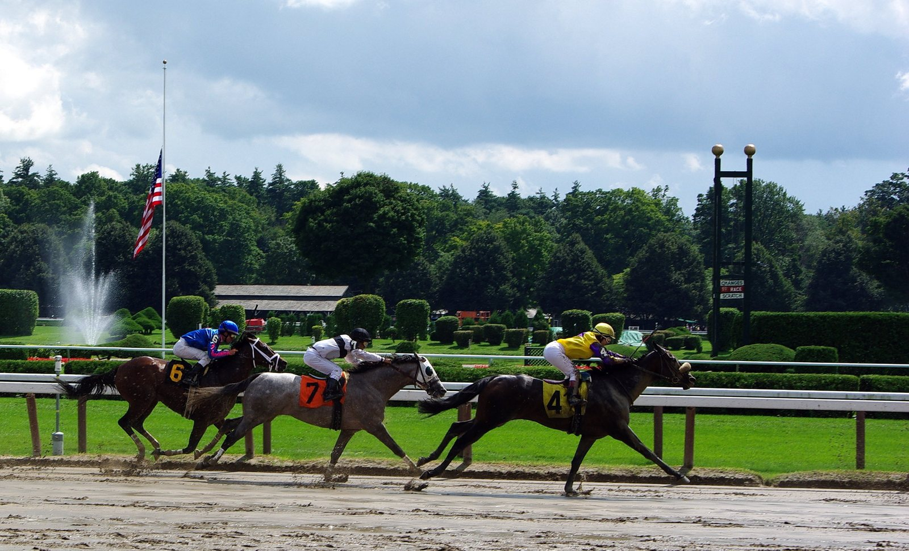

Resultados de La Zarzuela (18/10): Majestad (IRE) gana el Gran Premio Memorial Duque de Toledo y J. Gelabert firma un doblete
Majestad (IRE), con J. Gelabert, se llevó el Gran Premio Memorial Duque de Toledo, la carrera estelar de las 7 que disputó La Zarzuela. La sorpresa la dio Afrodita, que pagó 52,6 en el Premio Colindres. J. Gelabert fue el jockey del día, con 2 victorias. De nuestros 7 pronósticos acertamos 1 ganador y 3 en el podio.

CC BY 2.0
C1 · Premio Real Club Pineda (1.200 m · 11:15)
En los 1.200 m del Premio Real Club Pineda, Harry Cross (GB) (J. Gelabert) se impuso por un cuarto de cuerpo sobre Wonderful Dylan (GB), con Ribat (Fr) (A) tercero (11 participantes). El ganador pagó 6,2. Nuestro favorito era La Fafoune, que se quedó fuera del podio.
| Pos. | Caballo | Jockey | Margen |
|---|---|---|---|
| 1º | Harry Cross (GB) | J. Gelabert | — |
| 2º | Wonderful Dylan (GB) | R. N. Valle | 1/4 C |
| 3º | Ribat (Fr) (A) | H. Crouch | 2 3/4 C |
C2 · Premio Noozhoh Canarias (1.600 m · 11:45)
En los 1.600 m del Premio Noozhoh Canarias, Adhonorem (ITY) (D. Sikorová) se impuso por medio cuerpo sobre Meletea (GB), con Zumba Lola (IRE) tercero (14 participantes). El ganador pagó 14,4. Nuestro favorito era Carbayon, que se quedó fuera del podio.
| Pos. | Caballo | Jockey | Margen |
|---|---|---|---|
| 1º | Adhonorem (ITY) | D. Sikorová | — |
| 2º | Meletea (GB) | B. Fayos | 1/2 C |
| 3º | Zumba Lola (IRE) | R. N. Valle | 1 1/2 C |
C3 · Premio Colindres (1927/1928/1929) Patrocinado Por Marca (Hándicap Dividido 2º Parte) (1.600 m · 12:20)
Sorpresa en los 1.600 m del Premio Colindres: Afrodita (S. Le Quilleuc), que pagó 52,6, se impuso por 1 3/4 cuerpos a Eclair Lane (IRE), con King Kaid (IRE) tercero (18 participantes). Nuestro favorito, King Kaid, entró en el podio (3º).
| Pos. | Caballo | Jockey | Margen |
|---|---|---|---|
| 1º | Afrodita | S. Le Quilleuc | — |
| 2º | Eclair Lane (IRE) | D. Rodriguez | 1 3/4 C |
| 3º | King Kaid (IRE) | V. Janacek | 1 3/4 C |
C4 · Premio Vichisky (1988) (Hándicap Dividido 1ª Parte) (1.600 m · 12:55)
En los 1.600 m del Premio Vichisky (1988), Basco Bearnais (IRE) (H. Crouch) se impuso por 1 3/4 cuerpos sobre Xmas (IRE), con Otto tercero (12 participantes). El ganador pagó 11,8. Nuestro favorito era Sommersun, que se quedó fuera del podio.
| Pos. | Caballo | Jockey | Margen |
|---|---|---|---|
| 1º | Basco Bearnais (IRE) | H. Crouch | — |
| 2º | Xmas (IRE) | D. Sikorová | 1 3/4 C |
| 3º | Otto | V. M. Valenzuela | 1/2 C |
C5 · Gran Premio Memorial Duque De Toledo (Listed Local) (2.400 m · 13:30)
En los 2.400 m del Gran Premio Memorial Duque de Toledo, Majestad (IRE) (J. Gelabert) se impuso por 1 3/4 cuerpos sobre Rojiblanco (GB), con Sirjan (GER) tercero (13 participantes). El ganador pagó 9,2. 🎯 Era nuestro favorito: pronóstico de pleno.
| Pos. | Caballo | Jockey | Margen |
|---|---|---|---|
| 1º | Majestad (IRE) | J. Gelabert | — |
| 2º | Rojiblanco (GB) | S. Le Quilleuc | 1 3/4 C |
| 3º | Sirjan (GER) | H. Boutin | 1/2 C |
C6 · Gran Premio Ruban (1923) (Categoría A) (1.200 m · 14:00)
Sorpresa en los 1.200 m del Gran Premio Ruban: Cross the Tracks (GB) (B. Fayos), que pagó 32,4, se impuso por un cuarto de cuerpo a Tiger Mask (IRE), con Madrid tercero (7 participantes). Nuestro favorito, Madrid, entró en el podio (3º).
| Pos. | Caballo | Jockey | Margen |
|---|---|---|---|
| 1º | Cross the Tracks (GB) | B. Fayos | — |
| 2º | Tiger Mask (IRE) | H. Crouch | 1/4 C |
| 3º | Madrid | V. Janacek | 1/2 C |
C7 · Premio Facultad De Veterinaria (2.200 m · 14:30)
En los 2.200 m del Premio Facultad de Veterinaria, Sibarita (IRE) (D. Lopez) se impuso por 1 1/4 cuerpos sobre Napoles (FR), con Darro (Fr)(A) tercero (10 participantes). El ganador pagó 5,6. Nuestro favorito era Green Hussar, que se quedó fuera del podio.
| Pos. | Caballo | Jockey | Margen |
|---|---|---|---|
| 1º | Sibarita (IRE) | D. Lopez | — |
| 2º | Napoles (FR) | V. Alonso V. | 1 1/4 C |
| 3º | Darro (Fr)(A) | B. Fayos | 3/4 C |
Fichas: Adhonorem (Ity) (caballo) · Afrodita (caballo) · Basco Bearnais (Ire) (caballo) · Carbayon (caballo) · Darro (Fr) (caballo) · Eclair Lane (Ire) (caballo)
Por Martín Larrañeta